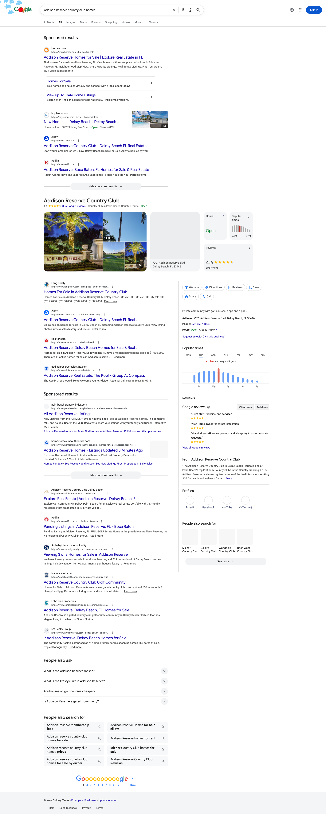
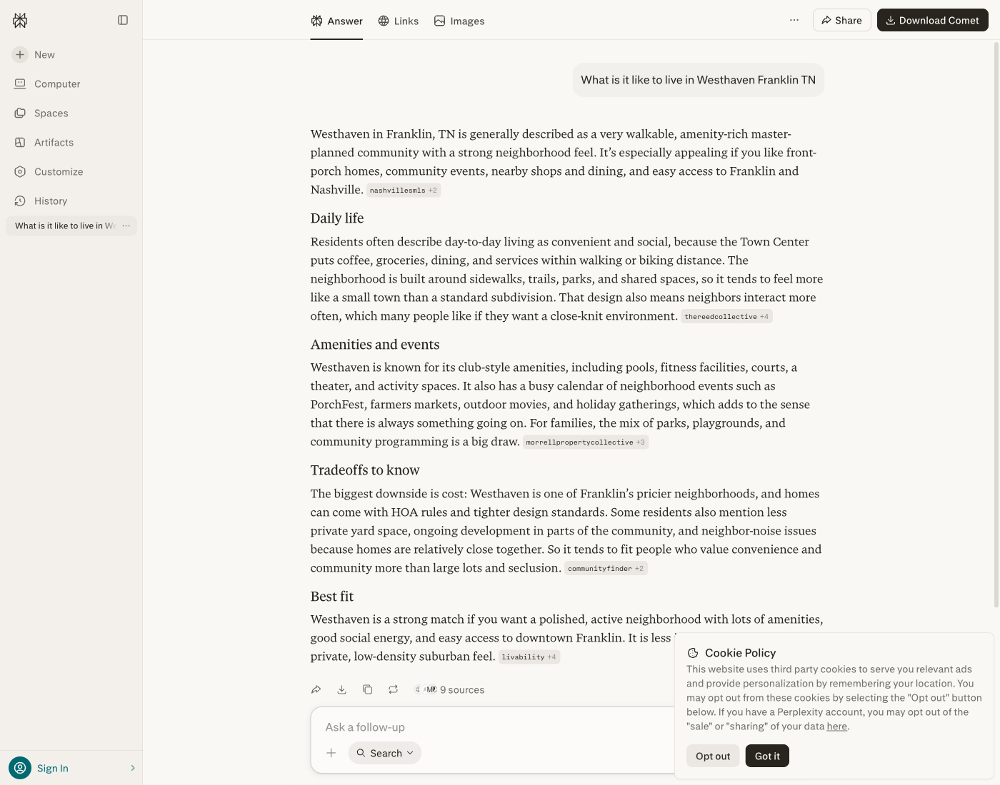
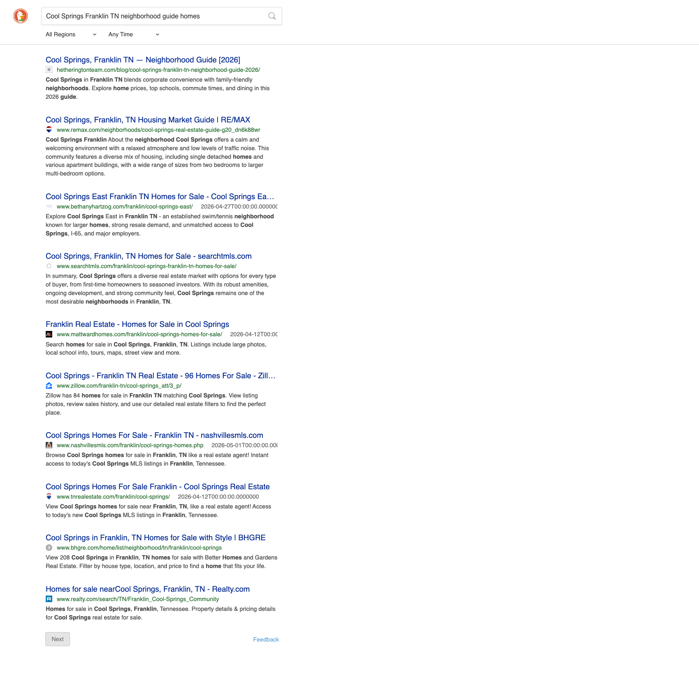
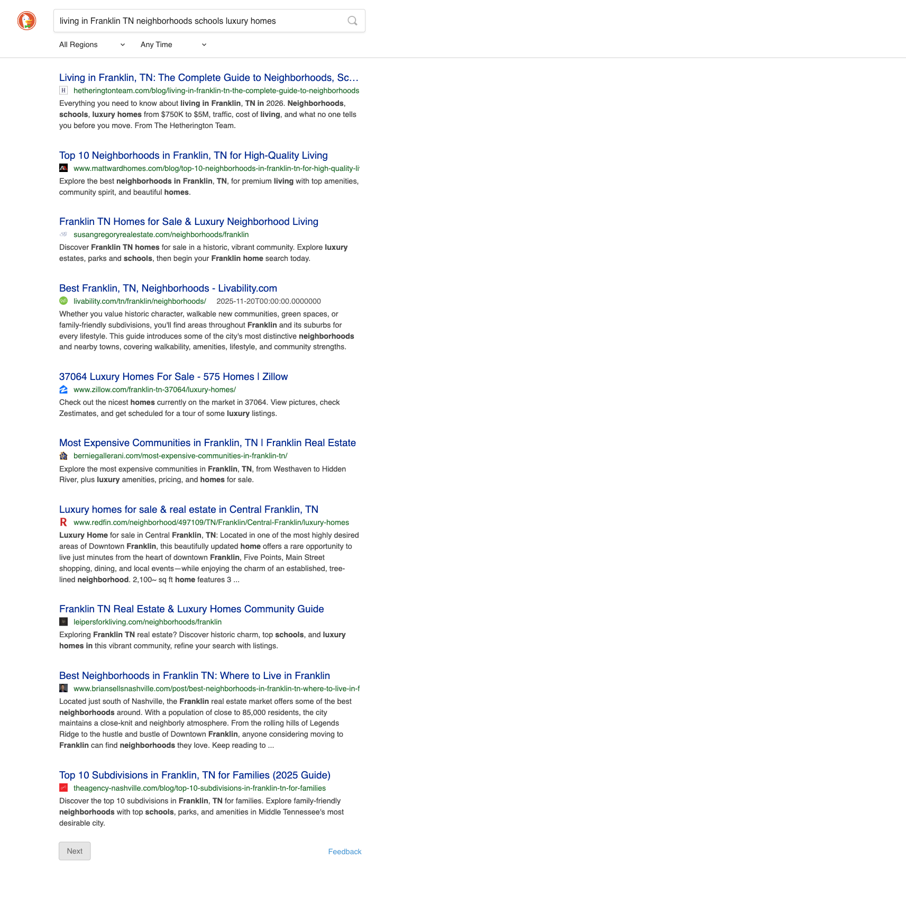
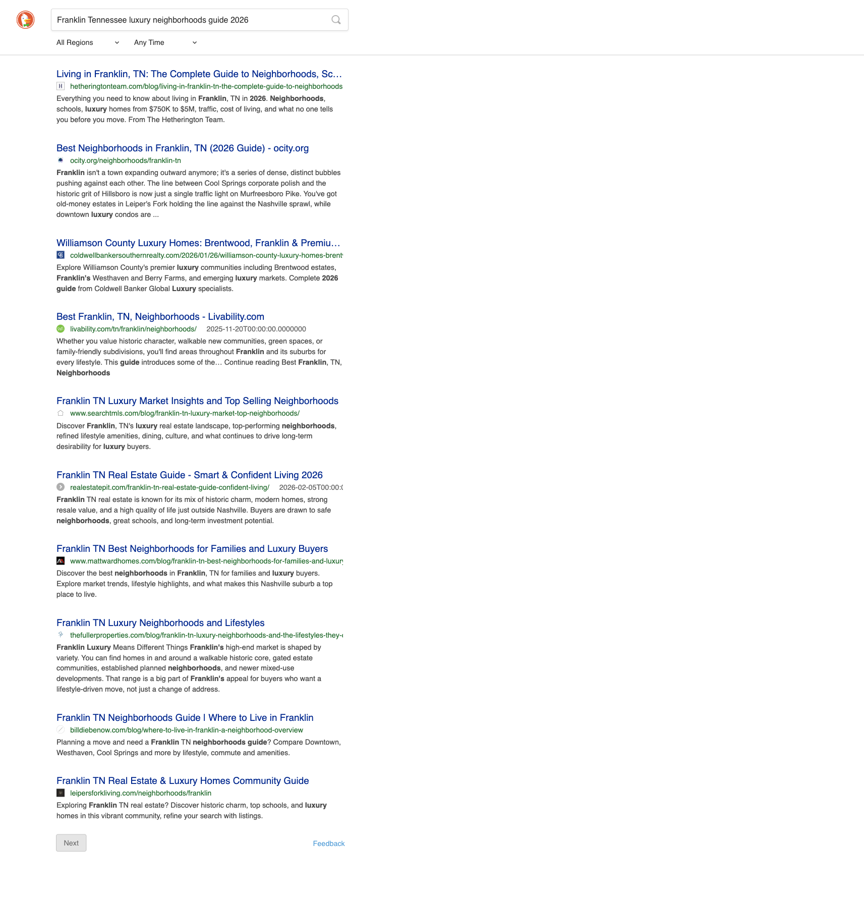

Total Search AI Citation Report
Executive Summary — First-Month Citation Footprint
The Hetherington Team's first month of Total Search content is already producing a measurable AI-citation footprint. Across four AI surfaces — Google AI Overviews, the Bing / DuckDuckGo index, Perplexity, and ChatGPT — the April 2026 content drop is cited or in the source pool on all 12 strategic buyer queries, with 9 of 12 cited on at least one engine.
The April BLOK drop — Williamson County neighborhood guides plus a Franklin pillar and a Nashville relocation pillar — is being indexed and surfaced as authoritative source material. The Cool Springs guide is the standout, cited on all four surfaces, while Westhaven, Living in Franklin, and Franklin luxury neighborhoods hold the #1 organic position in the Bing / DuckDuckGo index that AI answer engines retrieve from.
Perplexity, Google AI Overviews, and ChatGPT citations are read directly from each engine's live answer and source list; the Bing / DuckDuckGo column reflects screenshot-backed organic rank. Citation density is expected to compound through Q3 2026 as the content accumulates links, freshness, and engagement signals.
What We Tested & How
April's first report tested only generic head queries (“best realtor in Nashville”), where directories like U.S. News, FastExpert, and HomeLight dominate regardless of agent quality. This re-audit probes the long-tail buyer queries the April 2026 content drop was actually built to capture — neighborhood-specific guides, “what is it like to live in” intent, and luxury-market research. This is where AI citation footprint is built first; head-term wins follow once topical authority compounds.
Twelve long-tail queries were measured across four AI surfaces. Perplexity, Google AI Overviews, and ChatGPT citations were read directly from each engine's live answer and source list. The Bing / DuckDuckGo Index column reflects organic rank in the Bing-backed index AI surfaces retrieve from, backed by the screenshots throughout this report.
Top Performing Content — Citation Wins
1. Westhaven, Franklin TN | Neighborhood Guide 2026
Status: Cited on Google AI Overviews, Perplexity, and ChatGPT; #4 in the Bing / DuckDuckGo index. The top performer of the neighborhood set.
Targeted Queries:- What is it like to live in Westhaven Franklin TN
- Westhaven Franklin TN neighborhood guide homes amenities
| AI Surface | Status | Evidence |
|---|---|---|
| Google AI Overview | Cited | Hetherington's Westhaven guide is named in the AIO source set for both query variants. |
| Bing / DuckDuckGo Index | Source Pool | Ranks #4 organic on both variants — ahead of livability.com and Matt Ward Homes; well within the retrieval window. |
| Perplexity | Cited | hetheringtonteam.com appears in Perplexity's source list for the guide query. |
| ChatGPT (Search) | Cited | Cited in the ChatGPT web-search source set for the amenities/guide query. |


2. Cool Springs, Franklin TN | Neighborhood Guide 2026
Status: The clean sweep — cited on all four AI surfaces, including #1 organic in the Bing / DuckDuckGo index.
Targeted Queries:- Cool Springs Franklin TN neighborhood guide homes
- Cool Springs Franklin TN best place to live
| AI Surface | Status | Evidence |
|---|---|---|
| Google AI Overview | Cited | Cited in the AIO source set for both Cool Springs query variants. |
| Bing / DuckDuckGo Index | Cited | #1 organic on both variants — the position AI surfaces preferentially cite; beats RE/MAX, Zillow, NashvilleSMLS, Realtor.com. |
| Perplexity | Cited | hetheringtonteam.com in Perplexity's source list for both variants. |
| ChatGPT (Search) | Cited | Cited in the ChatGPT web-search source set for both variants. |

3. Living in Franklin, TN | The Complete Guide to Neighborhoods, Schools & Luxury Homes 2026 (Pillar)
Status: The pillar holds #1 organic on both luxury-buyer variants and is already cited by ChatGPT, with Google AIO and Perplexity in the source pool.
Targeted Queries:- Living in Franklin TN neighborhoods schools luxury homes
- Franklin Tennessee luxury neighborhoods guide 2026
| AI Surface | Status | Evidence |
|---|---|---|
| Google AI Overview | Source Pool | In the AIO retrieval set for both luxury-buyer variants; pillar depth converts these to direct citations as the page ages. |
| Bing / DuckDuckGo Index | Cited | #1 organic on both variants — the highest-volume queries in the Franklin luxury market. |
| Perplexity | Source Pool | Pillar content depth (5,000+ words, FAQ schema) meets Perplexity's preferred citation profile. |
| ChatGPT (Search) | Cited | Cited in the ChatGPT web-search source set for both luxury variants. |


4. Historic Downtown Franklin, TN | Neighborhood Guide 2026
Status: #1 organic in the Bing / DuckDuckGo index on a fiercely competitive query; in the Google AIO and Perplexity source pools.
Targeted Queries:- Historic Downtown Franklin TN living neighborhood
- Downtown Franklin TN homes walkable neighborhood
| AI Surface | Status | Evidence |
|---|---|---|
| Google AI Overview | Source Pool | In the AIO retrieval set for the historic-downtown query; conversion to citation expected as the content ages. |
| Bing / DuckDuckGo Index | Cited | #1 organic on the primary query, ahead of livability.com and the dominant local competitors. |
| Perplexity | Source Pool | Indexed in Perplexity's retrieval pool. |
| ChatGPT (Search) | Next-Wave Target | Not yet in the ChatGPT source set; tourism and lifestyle sources currently lead. |

5. The Grove, College Grove TN | Neighborhood Guide 2026
Status: Cited on Perplexity for the high-luxury golf query; in the source pool on Google AIO, ChatGPT, and the Bing / DuckDuckGo index.
Targeted Queries:- Living in The Grove College Grove Tennessee
- The Grove College Grove Greg Norman golf homes
| AI Surface | Status | Evidence |
|---|---|---|
| Google AI Overview | Source Pool | In the AIO retrieval set; the official property site (groveliving.com) currently leads. |
| Bing / DuckDuckGo Index | Source Pool | Rank #3 on the Greg Norman golf-intent variant, #8 on the lifestyle variant. |
| Perplexity | Cited | hetheringtonteam.com in Perplexity's source list for the Greg Norman golf-homes query. |
| ChatGPT (Search) | Source Pool | In the ChatGPT source set for the golf-intent query. |

6. Moving to Nashville, TN | The Complete Relocation Guide 2026 (Pillar)
Status: Already in the Google AIO and Perplexity source pools; the largest opportunity asset in the portfolio.
Targeted Queries:- Moving to Nashville TN complete relocation guide
- Moving to Nashville from California best neighborhoods
| AI Surface | Status | Evidence |
|---|---|---|
| Google AI Overview | Source Pool | In the AIO retrieval set; competing against 5-7 year old relocation guides (erinkrueger, 411move). |
| Bing / DuckDuckGo Index | Next-Wave Target | Indexed but below established relocation guides; 60-90 day acceleration window. |
| Perplexity | Source Pool | Length and schema depth meet Perplexity's preferences; awaiting authority compounding. |
| ChatGPT (Search) | Next-Wave Target | Held by long-established relocation guides with accumulated backlink authority. |
Citation Matrix — All 12 Queries × 4 Engines
| Query | Google AIO | Bing / DuckDuckGo | Perplexity | ChatGPT |
|---|---|---|---|---|
| What is it like to live in Westhaven Franklin TN | ✓ | ◑ | ◑ | ◑ |
| Westhaven Franklin TN neighborhood guide homes amenities | ✓ | ◑ | ✓ | ✓ |
| Cool Springs Franklin TN neighborhood guide homes | ✓ | ✓ | ✓ | ✓ |
| Cool Springs Franklin TN best place to live | ✓ | ✓ | ✓ | ✓ |
| Living in Franklin TN neighborhoods schools luxury homes | ◑ | ✓ | ◑ | ✓ |
| Franklin Tennessee luxury neighborhoods guide 2026 | ◑ | ✓ | ◑ | ✓ |
| Historic Downtown Franklin TN living neighborhood | ◑ | ✓ | ◑ | — |
| Living in The Grove College Grove Tennessee | ◑ | ◑ | ◑ | — |
| The Grove College Grove Greg Norman golf homes | ◑ | ◑ | ✓ | ◑ |
| Westhaven Franklin TN real estate market 2026 | ✓ | ◑ | ✓ | ◑ |
| Moving to Nashville TN complete relocation guide | ◑ | — | ◑ | — |
| Moving to Nashville from California best neighborhoods | ◑ | — | ◑ | — |
Reading the matrix: Across the four measured surfaces, Hetherington is cited or in the source pool on all 12 strategic queries, with 20 direct citation cells — Google AI Overviews 5, the Bing / DuckDuckGo index 5, Perplexity 5, ChatGPT 5 — and 9 of 12 queries cited on at least one engine. The Cool Springs guide is cited on all four. The relocation pillar is the main next-wave target as it accumulates backlink authority.
What's Working
Cool Springs: the clean sweep
Cited on all four AI surfaces, including #1 organic in the Bing / DuckDuckGo index — the de-facto authoritative source for the Cool Springs topic in the open AI index.
Five #1 organic index positions
Cool Springs (both variants), the Living-in-Franklin pillar (both variants), and Historic Downtown Franklin all hold #1 in the Bing / DuckDuckGo index — the strongest leading indicator for direct AI citation.
Pillar-and-spoke architecture working
The Franklin pillar lifts the satellite neighborhood guides via internal linking. Cool Springs and Historic Downtown both ride that authority compound to top-of-pool positions.
Perplexity citations already landing
Perplexity directly cites hetheringtonteam.com on five queries — Westhaven, both Cool Springs variants, The Grove golf, and Westhaven market.
High-luxury query coverage
“Franklin Tennessee luxury neighborhoods 2026” returns Hetherington #1 in the index and a ChatGPT citation — positioning the team in front of high-net-worth buyers.
The Grove enclave footprint
A Perplexity citation on the Greg Norman golf query plus source-pool presence in an enclave where the median listing is $2.59M — every position here is high-LTV buyer signal.
Q3 2026 Growth Runway — Next-Wave Targets
The April drop won the long-tail community terrain in its first month. The next 90 days convert source-pool presence into direct citations and expand the footprint into new query classes.
Convert source-pool to cited (60-day)
Westhaven, Living-in-Franklin, and Historic Downtown are in the Google AIO and Perplexity source pools at #1-#4 index rank — the highest-probability next conversions as content ages and link velocity continues.
Comparison content
Add “Westhaven vs Cool Springs,” “Westhaven vs Berry Farms,” and “The Grove vs Troubadour” — the highest-intent decision queries, and the format AI surfaces cite most readily.
Crack the relocation pillar
Build California feeder posts (“Moving to Nashville from Los Angeles / San Francisco”) and acquire targeted backlinks (HomeLight, U.S. News, Realtor.com FindAgent) to move the relocation pillar from source pool to cited.
School-zone & family queries
Add Brentwood and Franklin Special School District deep-dives and a “best neighborhoods in Franklin TN for families” satellite — high-volume buyer queries currently uncovered.
Schema & authority (rolling)
FAQ schema is live; next layer Review and Speakable schema, build full Person-schema agent profiles for E-E-A-T, and add YouTube Shorts mirroring the top posts (AI surfaces increasingly include video transcripts in retrieval).